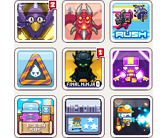

You may remember we featured a shot of the new site design a few days ago. One of the main changes for the new design is going to be the use of Smartphone style icons in place of our current mini shots. We hope that through using these we can convey more information in less space while also making them look more appealing!
You may notice that we have little red tags with numbers hanging off the icons as well as some of the other buttons on the site. The idea is that we will start to highlight new content on the site that you the user have not yet played. Site sections will show the number of new items that are there. We are considering having a different colour of tag to show any updates that might have been
made and there could also be further tags
added to highlight other elements!

The image shown is of the games page of the site which you would get to through clicking the games button at the top. Unlike the current site the games page would no longer be the same as the front page which in the new design will serve to highlight all the latest content rather than being solely about the games. The games page will offer a little more info about the games as well as have icons demonstrating different features the game may contain. The idea like the icons themselves is to offer more information to our users without sacrificing the aesthetics of our site which is very important to us.
Full Image: Click Here
We hope you like what you see and please do send us your thoughts!